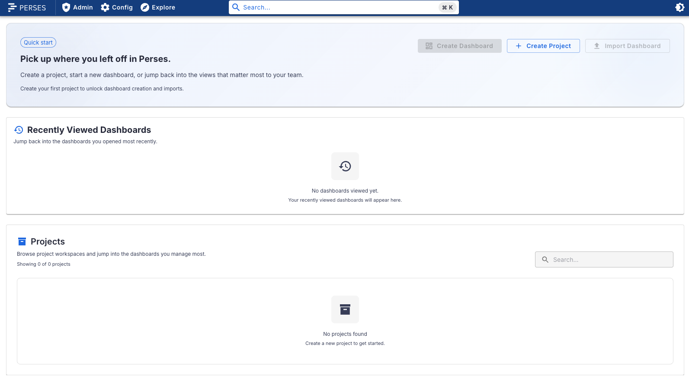
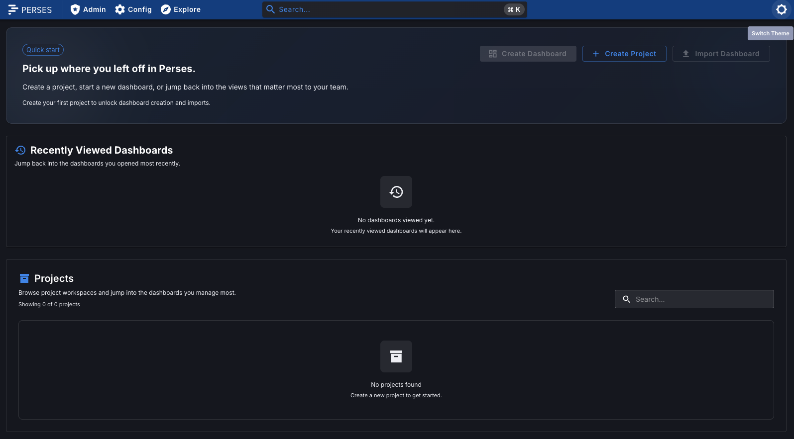
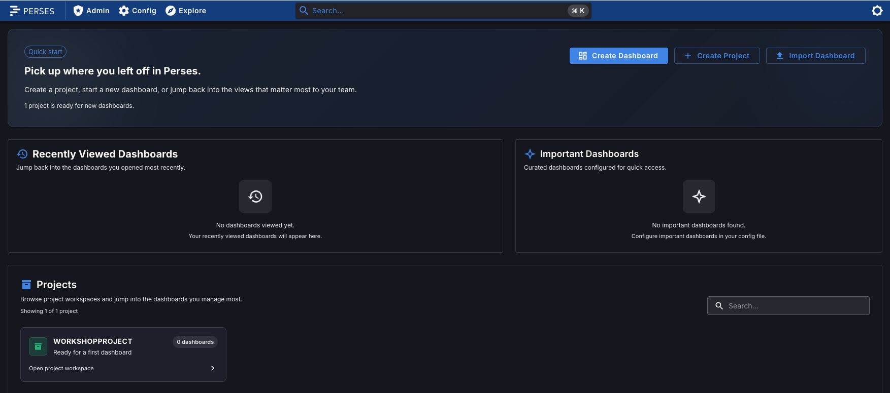

Container - Installing Podman tooling
Installing Perses using a container image is going to be demonstrated here using the open source
project Podman. It's assumed you have already
installed the Podman commandline tooling previously.
If you want to use other container tooling, such as Docker, most of the commands are the same with just a substitution of the tooling name (
If you want to use other container tooling, such as Docker, most of the commands are the same with just a substitution of the tooling name (
docker instead of
podman).
Container - Starting Podman machine
You need to make sure that the Podman virtual machine has been started, so, assuming you have
initialized a podman machine already:
$ podman machine start
Container - Running container image
It's pretty straight forward to running Perses in a container, just start the Perses container
image as follows:
$ podman run --name perses --rm -p 127.0.0.1:8080:8080 persesdev/perses:v0.54.0
The details in this command are that we give the container a referencable name
(
--name perses), remove the container from registry when stopped
(--rm), map the local machine port 8080 to the container port 8080
(-p 127.0.0.1:8080:8080), and use the image version supported in this
workshop (persesdev/perses:v0.54.0). Note: you can use any local port
you have available, but you need to map to the container port 8080.
Intermezzo - What to do with any failures?
At anytime in the workshop should you encounter failures, during installation, testing, data
population, or build results. Don't worry, this can be rerun anytime after you fix any problems
reported. The entry in the container registry for perses is removed when you stop it, so just
stop with
CTRL+C and restart it:
$ podman run --name perses --rm -p 127.0.0.1:8080:8080 persesdev/perses:v0.54.0
Container - Connect a browser (default)

Container - Connect a browser (dark mode)
Click on icon top right to switch themes for dark mode:

Intermezzo - But this version is empty?
The first thing you might notice is that you now have a blank canvas. There are no example
projects, no dashboards, and noting configured to get started with. Maybe you are OK with that,
but wouldn't it be nice to start this workshop with an example to explore?
To achieve that you can make use of the Perses Easy Install project. This contains a simple automated installation process to provide you with a running and pre-populated Perses instance in a container. This instance will have an example project ready for you to explore. On the next slide you will download and install Perses in a container using the Perses Easy Install project.
To achieve that you can make use of the Perses Easy Install project. This contains a simple automated installation process to provide you with a running and pre-populated Perses instance in a container. This instance will have an example project ready for you to explore. On the next slide you will download and install Perses in a container using the Perses Easy Install project.
Intermezzo - Resetting your container environment
Before we start installing a new container version of Perses, let reset our container
environment by stopping the running container with
CTRL+C and shutting down
our Podman machine as follows:
$ podman machine stop
Container - Using the easy install project
The Perses Easy Install project takes just 3 steps to a running server:
Let's walk through these steps one by one in the next slides...
- Download and unzip project.
- Run the
init.shfile in a console. - Connect in a browser window.
Let's walk through these steps one by one in the next slides...
Container - Downloading and unzip project
The first step is to
download the project.
Unzipping (use your file manager or console) should look something like this:
$ unzip perses-install-demo-[VERSION].zip
Archive: perses-install-demo-[VERSION].zip
creating: perses-install-demo-[VERSION]/
extracting: perses-install-demo-[VERSION]/.gitignore
inflating: perses-install-demo-[VERSION]/README.md
creating: perses-install-demo-[VERSION]/docs/
creating: perses-install-demo-[VERSION]/docs/demo-images/
inflating: perses-install-demo-[VERSION]/init.bat
inflating: perses-install-demo-[VERSION]/init.sh
creating: perses-install-demo-[VERSION]/installs/
inflating: perses-install-demo-[VERSION]/installs/README
inflating: perses-install-demo-[VERSION]/installs/perses-[VERSION].zip
creating: perses-install-demo-[VERSION]/support/
extracting: perses-install-demo-[VERSION]/support/README
creating: perses-install-demo-[VERSION]/support/bin/
...
Container - Getting started with install
In our example here we will run the console-based installation script (note the VERSION text
below is to be replaced with the version of the project you have downloaded):
$ cd perses-install-demo-{VERSION}
$ ./init.sh
Container - Enjoy the welcome ascii art!
First, you are presented with welcome art and details about this project:
[INFO] #############################################################
[INFO] ## ##
[INFO] ## Setting up the Perses Easy Install demo ##
[INFO] ## ##
[INFO] ## #### ##### #### #### ##### #### ##
[INFO] ## # # # # # # # # ##
[INFO] ## #### ### #### ### ### ### ##
[INFO] ## # # # # # # # ##
[INFO] ## # ##### # # #### ##### #### ##
[INFO] ## ##
[INFO] ## ##### ### #### # # ##
[INFO] ## # # # # # # ##
[INFO] ## ### ##### ### # ##
[INFO] ## # # # # # ##
[INFO] ## ##### # # #### # ##
[INFO] ## ##
[INFO] ## ##### # # #### ##### ### # # ##
[INFO] ## # ## # # # # # # # ##
[INFO] ## # # # # ### # ##### # # ##
[INFO] ## # # ## # # # # # # ##
[INFO] ## ##### # # #### # # # ##### ##### ##
[INFO] ## ##
[INFO] ## brought to you by Eric D. Schabell ##
[INFO] ## ##
[INFO] ## git@gitlab.com:o11y-workshops/perses-install-demo.git ##
[INFO] ## ##
[INFO] #############################################################
...
Intermezzo - Whoops... that's not right?
Note that there are many fail-safe checks in this script, and you found the first one! Read the
help messages in the console output and fix it by running it with the right argument:
...
[INFO] Checking the build mode arguments...
[WARN] ========================================================================
[WARN] = =
[WARN] = To use this installation script you have to provide one argument =
[WARN] = indicating how you want to install the Perses server. You have the =
[WARN] = option to install a container image or build it from source: =
[WARN] = =
[WARN] = $ ./init.sh {podman|source} =
[WARN] = =
[WARN] = Both methods are validated by the install scripts. =
[WARN] = =
[WARN] ========================================================================
...
Intermezzo - Not again! What went wrong?
As you scroll down the output you'll see the container image being installed, but after a few
tries, it fails? Here, remember, we stopped the podman VM. Restart it to continue:
...
[INFO] Checking the build mode arguments...
[INFO] Installing Perses container using image...
[INFO] Checking if Podman is installed...
[INFO] Starting the perses container image...
[WARN] Cleaning up any perses image that might still be running...
[INFO] Starting fresh perses container image...
[ERROR] ==========================================================================
[ERROR] = =
[ERROR] = Error occurred during 'podman run' starting perses container... make =
[ERROR] = sure you have started the Podman machine as follows and rerun this =
[ERROR] = installation script again: =
[ERROR] = =
[ERROR] = $ podman machine start =
[ERROR] = =
[ERROR] ==========================================================================
Container - Starting VM and restart install
From the previous help message we saw that the Podman virtual machine must be started, so,
assuming you have initialized a podman machine already:
$ podman machine start
$ ./init.sh podman
Container - Running Perses container image
Now we see the container image starting properly, followed by starting to apply the demo
examples by first logging in to the server:
...
[INFO] Checking the build mode arguments...
[INFO] Installing container image...
[INFO] Installing Perses container using image...
[INFO] Checking if Podman is installed...
[INFO] Starting the perses container image...
[INFO] Waiting for container to start...
[INFO] Setting up the Perses examples...
[INFO] Logging in to Perses instance: http://localhost:8080
...
Container - Loading example workshop project
The next steps are loading in our
WorkShopProject which contains an example
dashboard and data sources that we will use to query when building our first dashboard later in
this workshop:
...
[INFO] Applying the demo projects setup...
[INFO] Applying the dashboard setup...
[INFO] Applying the demo datasources...
...
Container - Sharing the end report
After a successful install, a final report is presented with instructions on how to
open the Perses dashboard and how to manage the container when done with this workshop:
...
[INFO] ======================================================
[INFO] = =
[INFO] = Install complete, get ready to rock Perses! =
[INFO] = =
[INFO] = The Perses dashboard can be opened at: =
[INFO] = =
[INFO] = http://localhost:8080 =
[INFO] = =
[INFO] = Getting started workshop available online: =
[INFO] = =
[INFO] = https://o11y-workshops.gitlab.io/workshop-perses =
[INFO] = =
[INFO] = Note: When finished using the Perses container, =
[INFO] = you can shut it down and come back later to =
[INFO] = restart it: =
[INFO] = =
[INFO] = $ podman container stop perses =
[INFO] = =
[INFO] = Also, remember to shut down the virtual machine: =
[INFO] = =
[INFO] = $ podman machine stop =
[INFO] = =
[INFO] ======================================================
...
Container - Connecting in a browser

Container - Connecting in a browser (dark mode)
Flip the switch in the top right corner for dark mode:

Lab completed - Results
Next up, exploring dashboard tooling...

Contact - are there any questions?
Eric D. Schabell
Director Evangelism
Contact: @ericschabell {@fosstodon.org) or https://www.schabell.org
Director Evangelism
Contact: @ericschabell {@fosstodon.org) or https://www.schabell.org